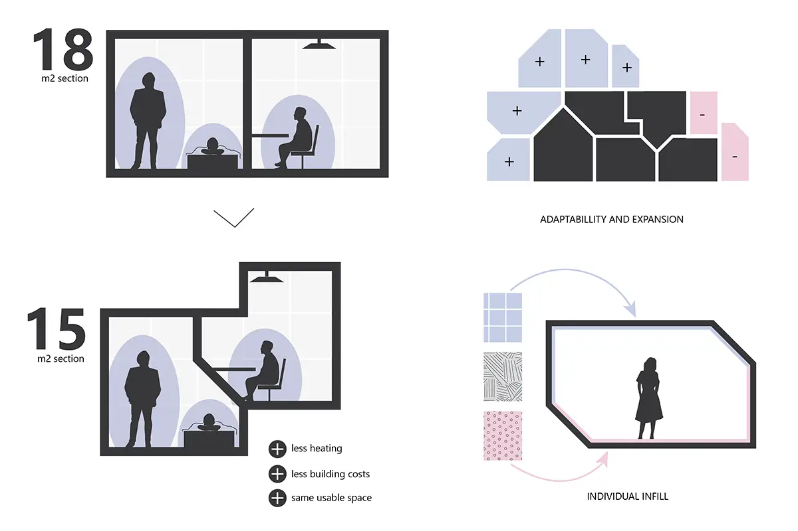
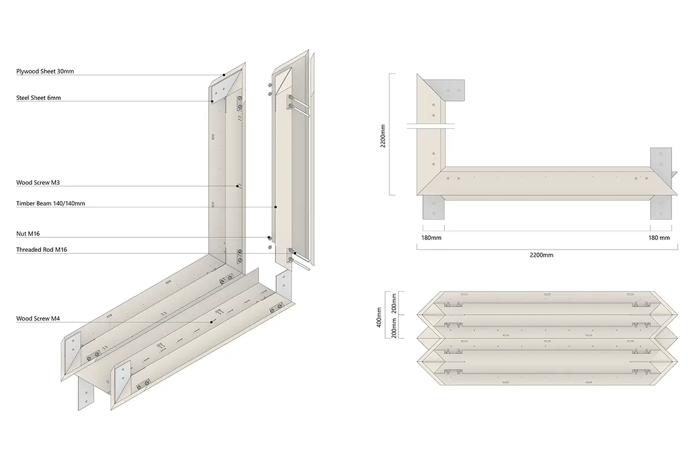
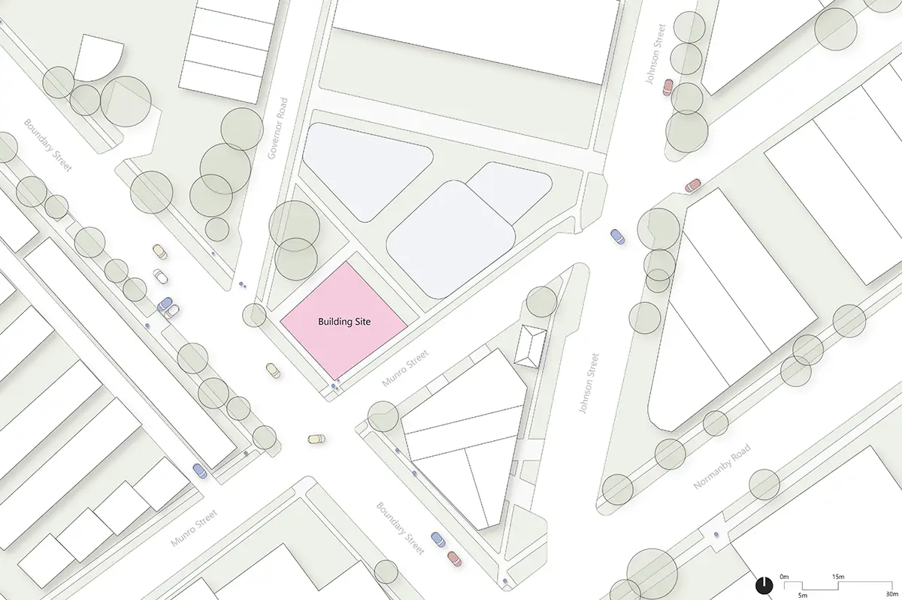

Master Studio- University of Melbourne 2022
Location: Melbourne, Australia
Team: Taichen Li
Supervisors: Darcy Zelenko - Danny Ngo
Computational Design Architecture Digital FabricationTetris Living tackles the inefficiency in the current building industry with a proposal for architecture. Buildings should respond to the changed needs of the inhabitants, and allow the individualization and reconfiguration of their living spaces. This can be done with the discretization of architecture. Specifically, this means that buildings are assembled out of a set of few components, allowing a huge range of possible configurations. The first step is the development of a part, suitable for the built environment. The part is then aggregated to shape a building following a certain logic.
The aggregation and the concept of discrete architecture as a participatory platform is tested in an architectural project, located in the Fishermen’s Bend, a new urban development area in Melbourne. As a discrete part, a timber beam with triangular section was developed. These parts can be assembled to frames. A row of frames can be assembled to rooms, and rooms can be stacked upon each other thanks to the triangular section of the parts. Through an interactive platform, inhabitants can choose their preferred room configuration. Following that, the apartments are stacked with the goal of maximum space efficiency.